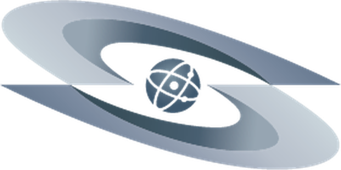

Организация 34 года соединяет учёных десяти стран. Каждую неделю снимает интервью с экспертами, проводит учения, раздаёт гранты. Материала. На годы вперёд.
А теперь цифра: это видят 37 подписчиков на YouTube. Тридцать семь.
Контент есть. Дистрибуции нет. Это лучшая проблема из возможных. Она чинится процессом, а не бюджетом.
Смотрел открытые страницы: сайт, LinkedIn, Facebook, YouTube. И искал ISTC там, где его нет.
Свежие ролики набирают от 6 просмотров. При этом библиотека уже готова: 26 интервью с экспертами, серия про Экспо в Осаке. Проблема не в производстве. В упаковке и дистрибуции.
Типичный пост ISTC. 5–45 лайков. Репост министра с упоминанием ISTC. 199. Личный пост директора о назначении. 420 реакций и 99 комментариев. Вывод: говорить должны лица, а не логотип.
Учёные и студенты Казахстана, Кыргызстана, Таджикистана, Армении и Грузии сидят в Instagram и Telegram. На этих платформах организация не представлена вообще. Ноль конкуренции за внимание.
Канал живой, ритм есть. Не хватает трёх вещей: людей в кадре, партнёрских охватов и нормальной упаковки видео. Пять исправлений. В порядке приоритета.
1–2 поста в неделю от имени исполнительного директора: «где была, что решили, почему это важно». Стажёр готовит драфты, директор правит и публикует. Корпоративная страница репостит.
UNODA, ICGEB, делегации ЕС, университеты, спикеров интервью. У каждого своя аудитория, и каждый тег открывает её для ISTC.
26 готовых интервью нарезать на клипы 45–60 секунд: хук в первые 3 секунды, субтитры, тег спикера. Публиковать нативно, не ссылкой на YouTube.
Стажировки и позиции публиковать через продукт Jobs: там их находят соискатели по поиску, а не только подписчики.
К каждому посту: #ScienceDiplomacy #Biosecurity #Nonproliferation #CentralAsia + тема поста. Сейчас почти везде одинокий #ISTC, который никто не ищет.
Сейчас это зеркало LinkedIn на английском. И поэтому оно никому не нужно. У Facebook в регионе другая аудитория: старше, русскоязычнее, локальнее. Вот её и берём.
В метаданных страницы город указан названием, которого нет с 1990-х. Это видит каждый, кто ищет ISTC в Google. Правка на 10 минут. Эффект на репутацию.
Дублировать ключевые посты на русском для аудитории пяти стран региона. Английский остаётся в LinkedIn. У каждой площадки своя роль и свой язык.
Семинары, учения, забеги. Выкладывать альбомами по 15–30 фото и отмечать участников. Отмеченные делятся сами. Это бесплатный охват через их друзей.
Каждый открытый семинар и вебинар. Как событие с датой и регистрацией, а не просто пост. События попадают в рекомендации и календари людей.
Главная задача в вакансии. «recurring interviews and podcast series, from concept to publication». Это ровно то, что я делаю руками: сам выставляю свет, снимаю, монтирую, делаю субтитры и нарезаю. Одна съёмка кормит все платформы неделю.
Итого: 8–10 единиц контента из одной съёмки. А в библиотеке ISTC уже лежат 26 снятых интервью. Начну с них, параллельно снимая новые.
Зачем: здесь живёт молодая научная аудитория региона. Та самая, которую ISTC зовёт в базу экспертов и на гранты. Аккаунт стартует с нуля, поэтому сначала. Фундамент: первые 12 постов рассказывают, кто мы. Новости выходят между ними в обычном режиме, без изменений.
Интервью с экспертом, проект в фокусе, человек науки, закулисье событий
Текущие новости ISTC. В обычном формате, как выходят на сайте
«Объясняю сложное просто»: хук-карусели и reels, которые репостят за пределы подписчиков
Плюс сторис ежедневно: анонсы, опросы, дедлайны, Q&A «спросите учёного».

Сразу честно: никаких танцев. Формат. «Объясняю сложное просто». Я делал так для своих 110 000 подписчиков. Работает, если в первые 3 секунды есть вопрос, на который хочется узнать ответ. Аккаунт с нуля. Значит, сначала первые 9–12 видео рассказывают про организацию (новости. Между ними, как обычно), потом включается цикл.
Интервью с экспертами, проекты, люди, «один день из жизни» центра
Короткие видео-новости ISTC с титрами. Без изменения формата
«Наука за 45 секунд»: вода, эпидемии, реакторы. Хуки, которые выносит в рекомендации
Дефолтный мессенджер региона. Здесь не нужен сторителлинг. Нужна польза, за которую подписываются и которую пересылают: гайды и полезные материалы плюс новости. Двуязычно: RU + EN. Я веду свой канал на 9 800 подписчиков. Знаю, что удерживает людей: регулярность и ноль воды.
Текстовая платформа, где научный сторителлинг даёт органический охват без бюджета. У меня там 20 000 подписчиков. Все посты-примеры в этой стратегии написаны в механике, которую я проверил на своей аудитории. Ритм: 3–4 треда в неделю, всё. Переупаковка того, что уже произведено.
Каждая новость ISTC → тред «что это значит и почему вам не всё равно». Первая строка. Хук, дальше. Просто о сложном.
Связка с видео-продакшном: самая сильная мысль каждого интервью. Как текстовый пост с тегом спикера. Ноль дополнительных затрат.
Аудитория Threads глобальная: доноры, научные коммуникаторы, диаспора. Английский. Основной, русская версия. В реплае.
Отвечать в тредах научных блогеров и организаций (UN, science-комьюнити) от аккаунта ISTC. Это бесплатный вход в чужие аудитории.
Только то, что я контролирую руками. Никаких «увеличим охват на 500%». Такие обещания дают те, кто не собирается их выполнять.
Плюс за 60 дней: минимум 4 собственных интервью. Снято, смонтировано, опубликовано (полная версия + нарезки + цитаты + подкаст-аудио). И гигиена первой недели: геотег Facebook, ссылки на все каналы с сайта, аналитика (Meta Business Suite + отчёт раз в месяц), единые описания и аватары на всех площадках. Через 60 дней. Отчёт «до/после» по каждому каналу с реальными цифрами.
Весь план построен на контенте, который у ISTC уже есть, и закрывает главную задачу вакансии Communications & Multimedia Production Intern. Интервью и подкасты от концепта до публикации. Бюджет. Ноль. Нужны руки, которые умеют это делать. Мои. Умеют: 145 000 подписчиков на личных проектах тому доказательство.